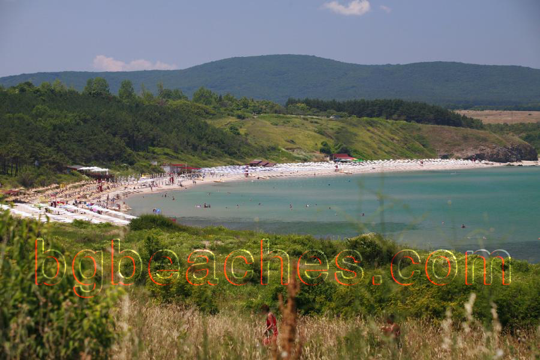

Ahtopol Beach - Main Beach Area Photo
About This Photo
This photograph captures Ahtopol's main beach area during a typical summer day. While the beach may appear modest compared to Bulgaria's mega-resort beaches, it offers something more valuable - an authentic, uncrowded coastal experience. The image shows the characteristic golden sand, the calm Black Sea waters, and the relatively spacious layout that gives visitors room to spread out and relax. Taken from the central beach access point, this view represents what most visitors will encounter when visiting Ahtopol.
Beach Characteristics
Ahtopol's beach stretches for over a kilometer along the southern Black Sea coast. The sand here is fine and golden, though not as pristine as some of the more famous beaches further north. The water is relatively shallow for the first 20-30 meters, making it particularly safe for children and families. The beach width varies from 30 to 50 meters depending on the section, providing ample space even during peak summer months of July and August.
What Makes This Beach Special
Unlike the crowded commercial beaches of Golden Sands or Sunny Beach, Ahtopol maintains an authentic Bulgarian coastal town atmosphere. This is a beach for those seeking relaxation over entertainment, quality over quantity. The town is recognized as one of Europe's most ecologically clean settlements, and the beach reflects this commitment to environmental preservation. You'll find the beach well-maintained but not overdeveloped, with natural vegetation still visible along the edges.
Beach Facilities & Amenities
The main beach area offers standard amenities including:
- Sunbed & Umbrella Rentals: Available throughout the beach at 10-15 BGN per day (approximately 5-8 EUR)
- Lifeguard Service: Operating from 9 AM to 6 PM during peak season (June-September)
- Beach Bars: Several small bars serving refreshments, snacks, and cold drinks
- Water Sports: Basic offerings including water bikes, banana boat rides, and paddle boards
- Showers & Toilets: Public facilities available near the main entrance
- Changing Cabins: Free changing facilities for beachgoers
Best Times to Visit
The optimal time to visit Ahtopol beach is from early June through mid-September when water temperatures range from 22-25°C (72-77°F). July and August are the busiest months, though "busy" here means far fewer crowds than major resorts. For those preferring solitude, consider visiting in June or September when the weather is still excellent but the beach is noticeably quieter. Early mornings (before 10 AM) offer the most peaceful beach experience, with calm waters perfect for swimming.
Nearby Attractions
From the beach, you can easily access several attractions:
- The Historic Lighthouse: A 15-minute walk along the coastal path leads to Ahtopol's iconic lighthouse with panoramic views
- The Port Area: Just 5 minutes away, where you can watch fishing boats and enjoy fresh seafood
- Old Town: Traditional Bulgarian architecture and narrow cobblestone streets
- Coastal Walking Path: Extends several kilometers in both directions for scenic walks
Practical Tips for Visitors
Getting Here: The beach is easily accessible from the town center - just a 5-minute walk from most accommodations. Free public parking is available nearby during off-peak hours, though it can fill up quickly in July and August.
What to Bring: While umbrellas are available for rent, bringing your own beach mat, sunscreen (SPF 30+ recommended), and water is advisable. The nearest shops are about 200 meters from the beach entrance.
Safety: The shallow waters and lifeguard presence make this a very safe beach for families. However, be aware of occasional jellyfish during late summer months.
Costs: Beach access is free. Expect to spend 10-15 BGN for sunbed rental, 5-10 BGN for drinks and snacks at beach bars.
Best For: Families with children, couples seeking relaxation, older travelers, and anyone looking to escape overcrowded tourist beaches.
Why Ahtopol Over Other Beaches?
While Ahtopol's beach may not win beauty contests against places like Silistar or Irakli, it offers something increasingly rare on the Bulgarian coast - authenticity. This is a beach where locals still outnumber tourists, where prices remain reasonable, and where you can actually hear the waves over the noise of jet skis and beach bars. For travelers seeking a genuine Bulgarian coastal experience rather than an international resort atmosphere, Ahtopol delivers exactly what's needed.